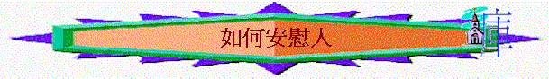

引言
「但那安慰喪氣之人的神藉著提多來安慰了我們；」林後7:6
人類其中一種最大的力量就是安慰了，保羅外表雖剛強，但他也有懼怕喪氣的時候，但當神藉提多安慰他時，他可以繼續走前面的路，筆者也曾經經歷傷心失意時候，但仍記得神藉一位弟兄有聲無聲的安慰，使自已心靈得開解來，我想我們也經歷被人安慰時刻，我們也想安慰其他人，但如何能向傷心的人帶出合適的安慰呢？
一.愛心
「所以，在基督裡若有什麼勸勉，愛心有什麼安慰，聖靈有什麼交通，心中有什麼慈悲憐憫，」腓2:1
自己曾是讀社工的，若我對肢體的關懷單是因為我是專業社工，是想滿足自己的輔導成就，我的關心仍未是最完美，安慰人的動機不單是責任、興趣，也不是滿足自己的成就感，而是出於真誠的愛，用神給我們的愛、裏面的慈悲、憐憫、恩慈、關心安慰對方。記得我有一次與一位肢體交通，當時我的心情頗低落，我不大記得那次與他交通的內容，但我所深刻的是對方對自己多年的愛與關心，他那份愛成為我人生在幽谷中很大的激勵；或許我們不知用什麼言語與技巧扶助身邊的人，但真摯的愛往往是在傷痛中最好的良藥，讓我們不塞住自己的心，用主的愛愛身旁的人。
二.言語
1.對心說話
「我的心哪，你為何憂悶？為何在我裡面煩躁？應當仰望神，因我還要稱讚他。他是我臉上的光榮（原文作幫助），是我的神。」詩42:11
希伯來人的成語稱「安慰」為「對心說話」，人傷痛時，未必需要聆聽一番大道理，可能需要是自己的心與自己說話，需要聆聽內心的微小聲音，需要安靜地聽心語，當我嘗試輔導肢體時，我很多時候鼓勵他們用一段時間，可能去到效外或較靜的地方，嘗試退一退，與自己的心，與心靈中的主說話；我讀神學期間，曾經在失意時，常放棄讀神學，但感謝神，當我一個人在公園裡漫步，想起詩42:11，嘗試問自己的心：「我的心哪，你為何憂悶？」很奇怪，我的心就開始慢慢得堅固起來；的確，讓別人有空間安靜自己，對心說話也是一種很有力的安慰別人的方法。
2.慈愛的話
「波阿斯回答說：「自從你丈夫死後，凡你向婆婆所行的，並你離開父母和本地，到素不認識的民中，這些事人全都告訴我了。願耶和華照你所行的賞賜你。你來投靠耶和華以色列神的翅膀下，願你滿得他的賞賜。」路得說：「我主啊，願在你眼前蒙恩。我雖然不及你的一個使女，你還用慈愛的話安慰我的心。」」得2:11-13
波阿斯用慈愛的說話安慰了對方，慈愛有 ”Kindly”意思，波阿斯對路得是慈愛的，不輕看她是寡婦與貧窮人，反欣賞她所作的，也祝福對方。有時有肢體將他們不開心的事與我分享，我會真誠的欣賞他們願意坦誠及勇敢與人分享，原來欣賞、接納、肯定、祝福，顧恤的言語已是慈愛的話了。
3.聖經的話
「耶和華啊，我記念你從古以來的典章，就得了安慰。」詩119:52
最好的言語仍是神的話，神的話是帶有能力，也可以安慰人的，有一次，我自己在灰心失意時，又要繼續負責宣講事奉，心身靈真是沒有一點力量，但那時，聖經的一句話：「惟有主站在我旁邊，加給我力量．．．．．．」就成為我很大的力量，當我繼續思想時，神的話就幫助我有力事奉了，原來用聖經的話語───可能寫一句金句與對方或鼓勵他們聆聽神僕說話也能帶出鼓勵與安慰的。
三.聆聽
「你們要細聽我的言語，就算是你們安慰我。」伯21:2
另外，不一定需要太多的言語，有時太多的說話反令人感到厭煩，受苦者真正的需要是要找到一位聆聽者，細心聆聽他的說話，耐心明白他的感受。在牧會過程中，有些肢體找我傾談時，我發現原來他們不是我要給什麼指定答案與分析，只要我嘗試用心聆聽他們的分享，讓他們適當舒發內心感受，也能帶給他們一點安慰；不知今天我們多不多聆聽別人的分享，還是自己多教導別人，卻缺少有深度的聆聽呢？
四.經歷
「我們在一切患難中，他就安慰我們，叫我們能用神所賜的安慰去安慰那遭各樣患難的人。我們既多受基督的苦楚，就靠基督多得安慰。我們受患難呢，是為叫你們得安慰，得拯救；我們得安慰呢，也是為叫你們得安慰；這安慰能叫你們忍受我們所受的那樣苦楚。」林後1:4-6
當我們在困難中感受神的安慰後，我們往往可以用自己的經歷、對神的體會安慰别人。我曾經有至少２至３年長時間失眠的經歷，我體會不能入睡的慘痛情況，身體不單感疲乏，心靈也感煩躁，當肢體在傷心中難以入睡時，我會因為自己的經歷而更明白對方的痛苦，我也可分享在那段時間神怎樣安慰我，其實不單是我，我們生命中也有不同程度在患難中的經歷，我們可以回想那時的感受，那時神怎樣安慰我們，我們用神給我們的安慰幫助其他肢體。
五.體恤
「辱罵傷破了我的心，我又滿了憂愁。我指望有人體恤，卻沒有一個；我指望有人安慰，卻找不著一個。」詩69:20
人落在艱難中，很多時候指望別人體恤自己，不知我們多不多體恤受苦人的呢？
1.對失去至親的人
「以撒便領利百加進了他母親撒拉的帳棚，娶了他為妻，並且愛他。以撒自從他母親不在了，這才得了安慰。」創24:67
首先，對失去至親的人，我們有體恤嗎？強如以撒、雅各、他們失去親人後，也需要時間才能受安慰，在牧會中，我也見過不少肢體們，失去了至親，他們經過幾年時間，有時仍未放下傷痛心情，我自於上年失去了我的父親，我以為自己的心情至今應平伏了，但很奇怪地，有時與肢體傾談父親的事，也不其然流下男兒淚，我發現我真需要更多時間才能平伏心中失去至親的傷痛；所以不要輕易對對方說：「明天就沒事了！」
2.對在苦難中感不明白的人
「約伯回答說：這樣的話我聽了許多；你們安慰人，反叫人愁煩。虛空的言語有窮盡嗎？有什麼話惹動你回答呢？我也能說你們那樣的話；你們若處在我的境遇，我也會聯絡言語攻擊你們，又能向你們搖頭。」伯16:1-4
另外，對在苦難中感不明白的人，我們又如何？約伯覺自己為義，他不明白為何苦難臨在他身上，但他的朋友用無知的言語為他解釋他苦的原因是因為犯罪，他們的說話不能真正安慰約伯，有時，我們的人生，也會遇到很多不明白的事情，在報刊中，我們也見到一些愛主的基督徒，也會遇到交通意外，有時我們也不明白神為何要在此時給他們這些經歷，而人在不明白中，我們則要學習不要草率為人尋求答案，甚至為對方判斷對與錯，否則令人更感愁煩。
3.對在軟弱中過份憂愁的人
「這樣的人受了眾人的責罰也就夠了，倒不如赦免他，安慰他，免得他憂愁太過，甚至沉淪了。所以我勸你們，要向他顯出堅定不移的愛心來。」林後2:6-8
另一方面，若犯罪的肢體已懊悔，他也受過教會管教，我們要明白他們已極度憂愁，倒不如赦免他們，安慰他們，不要令他們憂愁至死。
4.對表面剛強的人
「我們從前就是到了馬其頓的時候，身體也不得安寧，周圍遭患難，外有爭戰，內有懼怕。但那安慰喪氣之人的神藉著提多來安慰了我們；」林後7:5-6
最後，當我們見到一些肢體遇到困難時而感懼怕，我們不要指責他們「為何這樣沒用」「小小的事就怕起來」，強如保羅，他也有他的軟弱，他也會懼怕，也需要人安慰的。我作為牧者，很多時候，給人的印象是剛強及沒有軟弱的，但牧會已十年的我也會事奉中感懼怕，也會有不足的地方，記得有一次，有一位肢體與我分享，他原來每日也會為我祈禱的，我聽完後，感到很大鼓勵，我們也可用祈禱，用體恤支持安慰懼怕的人。
六.同感
「約伯的弟兄、姊妹，和以先所認識的人都來見他，在他家裡一同吃飯；又論到耶和華所降與他的一切災禍，都為他悲傷安慰他。每人也送他一塊銀子和一個金環。」伯42:11
「與喜樂的人要同樂；與哀哭的人要同哭。」羅12:15
「不但藉著他來，也藉著他從你們所得的安慰，安慰了我們；因他把你們的想念、哀慟，和向我的熱心，都告訴了我，叫我更加歡喜。」林後7:7
人在哀傷中，除了需要人體恤外，也需要人明白他內裡的感受，若對方嘗試代入，與他同感，為他悲傷，與他同哭，也成為他很大的安慰(當然是出自真心，由心而發的)
七.同在
「我為他們選擇道路，又坐首位；我如君王在軍隊中居住，又如弔喪的安慰傷心的人。」伯29:25
「但那安慰喪氣之人的神藉著提多來安慰了我們；」林後7:6
另外，出席喪家的喪禮，陪伴他們，與他們一起，也可以帶來關心與支持。自己曾負責不少安息聚會，很多喪家事後也回來教會與我們分享，他們當時最深刻的事是很多肢體出席喪禮，他們真感受到人的關心；在我父親的喪禮中，我母親感到其中最大的安慰是有很多教會的弟兄姊妹與親戚朋友出席喪禮，她曾經表示，日後有機會要回到教會中多謝出席的肢體，原來我們的出席與同在是能安慰傷心的人的；又記得有一次，有一位朋友，他剛失戀，那時我知道後，我真想即時在他身旁，我不知怎安慰他，但我自己請了幾日假，在他身旁陪伴他；其實我們也可以的，在適當的時候，與受苦的人一起已是很大的支持了！
八.激勵
1.向對方發出真誠關心
「不但藉著他來，也藉著他從你們所得的安慰，安慰了我們；因他把你們的想念、哀慟，和向我的熱心，都告訴了我，叫我更加歡喜。」林後7:7
當信徒向保羅表達真誠的想念、哀慟、熱心、他們感受到的，是可以激勵他向前繼續完成主的工作。我們也一樣，人在難處中，我們未必可以每時每刻在他身邊，但我們對對方的想念、哀慟、熱心，他們也可感受的。
2.自己努力成長事奉主
「耶數又稱為猶士都，也問你們安。奉割禮的人中，只有這三個人是為神的國與我一同做工的，也是叫我心裡得安慰的。」西4:11
「所以弟兄們，我們在一切困苦患難之中，因著你們的信心就得了安慰。」帖前3:7
作為一個屬靈領袖----保羅，他的安慰是甚麼？是見到信徒成長，信徒努力事奉主，就成為他的激勵了。我作為牧者，當見到主的羊成長，自己也十分喜樂的，記得有一次，有一位少年肢體與我分享，他現努力追求，用了一星期就讀完馬太福音，我聽了以後，心中出現一種說不出來的喜樂；今天，我們又想不想令我們的導師，我們的牧者喜樂呢？想不想鼓勵他們？若想的話，我們要努力成長，我們的長進可以成為他們很大的激勵的。
九.榜樣
另一方面，我們也可效法一些美好的榜樣，學習他們怎安慰人
1.效法父母
「母親怎樣安慰兒子，我就照樣安慰你們；你們也必因（或作：在）耶路撒冷得安慰。」賽66:13
「你們也曉得我們怎樣勸勉你們，安慰你們，囑咐你們各人，好像父親待自己的兒女一樣，」帖前2:11
有時我在公園中，留意一些小朋友，不小心的跌倒了，他們的反應是即是大哭，小朋友的父母見到這情況會怎樣？他們很多時候不是責備小朋友為何這樣不小心，反而即時擁抱小孩子，叫他們不用怕，父母在他們身邊，這就是至親對兒女的最好妻慰，的確，當我們留意父母怎樣安慰勸勉兒女，他們無比的關心，體諒、陪伴……已令我們知道怎樣幫助傷心的人。
2.效法基督
「各人不要單顧自己的事，也要顧別人的事。你們當以基督耶穌的心為心：」腓2:4-5
基督是我們最好的榜樣，祂不是單顧念自己的事，祂是顧念別人，願意放低自己，成為僕人，服事他人，我們當以基督的心為心，不是單留意自己的需要，而是顧念其他有需要的人，服事他們。有時，自己也會遇到一些自己不想接觸的人，但想到基督昔日在世也接觸及扶助妓女、窮人、稅吏、大痳瘋病人，我又怎可不接觸他們呢？
3.效法父神
A.記念百姓
「過了多年，埃及王死了。以色列人因做苦工，就歎息哀求，他們的哀聲達於神。神聽見他們的哀聲，就記念他與亞伯拉罕、以撒、雅各所立的約。神看顧以色列人，也知道他們的苦情。」出2:23-25
父神也是我們很好的榜樣，當以色列人在埃及中受苦，他們哀求神，神怎樣的回應？祂首先聽見-選民的哀歎，祂不是不知道的，祂實在是聽到的，祂不單聽到，也祂記念對先祖的承諾，祂會是以色列的神，祂必看顧卑微的百姓，也祂明白他們的苦情，神的聽見、記念、看顧、明白就是我們美好的榜樣，我們也要效法父神，嘗試多聆聽別人的需要，記念他們的困境，看顧他們，也代入明白他們的感受，已是很大的支持了！
B.體恤摩西
「摩西對耶和華說：「你為何苦待僕人？我為何不在你眼前蒙恩，竟把這管理百姓的重任加在我身上呢？這百姓豈是我懷的胎，豈是我生下來的呢？你竟對我說：『把他們抱在懷裡，如養育之父抱吃奶的孩子，直抱到你起誓應許給他們祖宗的地去。』」民11:11-12
「你這樣待我，我若在你眼前蒙恩，求你立時將我殺了，不叫我見自己的苦情。」民11:15
「我要在那裡降臨，與你說話，也要把降於你身上的靈分賜他們，他們就和你同當這管百姓的重任，免得你獨自擔當。又要對百姓說：『你們應當自潔，預備明天吃肉，因為你們哭號說：誰給我們肉吃！我們在埃及很好。這聲音達到了耶和華的耳中，所以他必給你們肉吃。』民11:17-18
「耶和華對摩西說：「耶和華的膀臂豈是縮短了嗎？現在要看我的話向你應驗不應驗。」」民11:23
神不單顧念以色列人，也記念摩西的，摩西有一次因著眾百姓的壓力，使到他的情緒出現，因而厭棄神的托負，為何把這管理的責任加在他身上！而且也厭棄百姓，本來深愛同胞的摩西，也因壓力感覺這百姓不屬於他，和他沒關係的！甚他厭棄自己，去到求死地步，但神的回應是怎樣的呢？對一個厭棄托負、厭棄百姓、厭棄自己的人，神卻沒有責備他，反而深表認同他的感受，選出其他人分擔他的難處，也給他信心：「耶和華的膀臂豈是縮短了嗎？」
我們也可效法父神，對落在有很大壓力的事奉者，不即時責備對方，反而體恤他們，給予實質的幫助與鼓勵！
十.靠神
1.父神
「但願賜忍耐安慰的神叫你們彼此同心，效法基督耶穌，」羅15:5
「願頌讚歸與我們的主耶穌基督的父神，就是發慈悲的父，賜各樣安慰的神。」林後1:3
當然，我們在幫助人時也要靠神的，我讀神學時，師長曾經與我們分享，將來牧會時，最重要的是將人帶到神前，不是帶到自己面前，人算什麼呢？人的力量是有限的，唯有神才是安慰的源頭，在祂裡面有各種安慰、忍耐與平安，所以我們要緊記，無論我們為人做了什麼多事情，也不要忘記將人帶到神前，鼓勵他仰望神，也為對方祈禱，求神賜安慰與他。
2.基督
「仰望為我們信心創始成終的耶穌（或作：仰望那將真道創始成終的耶穌）。他因那擺在前面的喜樂，就輕看羞辱，忍受了十字架的苦難，便坐在神寶座的右邊。那忍受罪人這樣頂撞的，你們要思想，免得疲倦灰心。」來12:2-3
我的教會每星期也有擘餅聚會，用詩歌、經文、祈禱記念主的，很奇怪，有時自己也有不開心的光景，但很多時候，當在聚會中思想祂的救恩，祂的受苦，自己的愁煩也會清除，的確，人在疲倦灰心中，當我們帶他仰望基督，望祂怎樣因擺在面前的喜樂，輕看羞辱，忍受苦楚，他可以因此受激勵，有力走前面的道路來！
3.聖靈
「人若不常在我裡面，就像枝子丟在外面枯乾，人拾起來，扔在火裡燒了。」約15:16
「那時，猶太加利利、撒瑪利亞各處的教會都得平安，被建立；凡事敬畏主，蒙聖靈的安慰，人數就增多了。」徒9:31
而聖靈是安慰人的靈，我們可以靠聖靈給我們的智慧安慰別人，也可靠聖靈令我們思想起主的話，用主的話激勵對方。我有時在與肢體交通時，我會默默祈禱求主的靈教我講合適的話，也求聖靈在他內心工作，醫治他心靈的傷痛。
十一.對方也要受安慰
「還有末了的話：願弟兄們都喜樂。要作完全人；要受安慰；要同心合意；要彼此和睦。如此，仁愛和平的神必常與你們同在。」林後13:11
但若對方不肯接受別人的安慰，我們可能用什麼的安慰方法也沒用的，我有時會主動關心一些失意的服體，但也有些不願接受我的關心，我只好做我唯一的事───將他交給神了，我們在關心人的過程中，有時可能也會遇到一些肢體不願受安慰，但我們不要灰心，我們只要靠神工作，求神使他有受安慰的心，神會悅納我們為肢體的心。
弟兄姊妹們，不知今天我們有否見到一些肢體在難處及失意中，我們看見後，又願否學習基督的心，不要單顧自己的事，也要顧別人的事！但願我們用基督給我們的安慰，幫助我們身邊有需要的人！